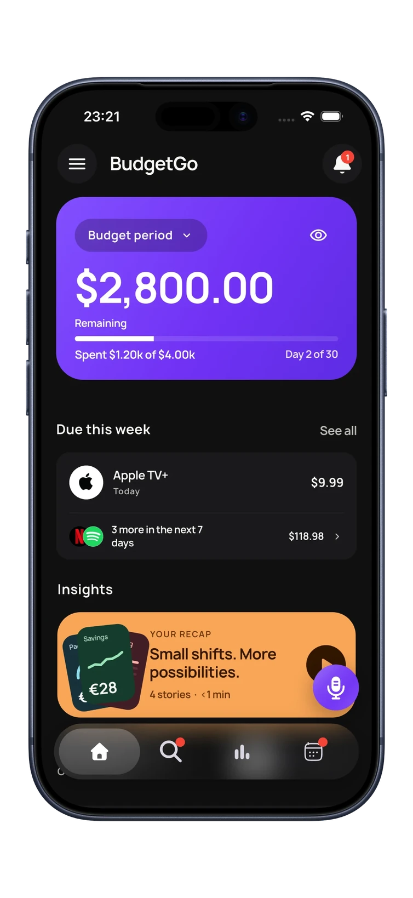

Learning how to make a holiday budget is the best thing you can do in early November. Prices and plans are still flexible, and the season hasn't started yet. This guide walks through six steps, the categories to include, a worked example with the math, and a way to track it as you go.
Why a holiday budget is more than a gift list
Most people budget for presents and forget the rest. Deloitte's 2026 holiday survey of 4,000 US consumers found shoppers plan to spend an average of $1,654, with about $988 on retail goods like gifts. The remainder goes on holiday activities such as travel and get-togethers (Deloitte, October 2026). That gap is where holiday budgets quietly break.
Step 1: Look at what you spent last year
Your own history beats any average. Scroll through last November, December and early January and note what you actually spent on gifts, food, travel and events. If you tracked it, this takes two minutes. If you didn't, use this year as the starting point and track it properly from now. Our guide to tracking spending without a spreadsheet covers the setup.
Step 2: List every holiday cost (holiday budget categories)
Write down everything the season costs you, not only presents. A good starting list:
- Gifts, including stockings, teachers and gift exchanges
- Food and hosting, from the big dinner to the extra groceries
- Travel: fuel, flights, bags, hotels
- Events and parties, including work parties and nights out
- Decorations, wrapping, cards and postage
- Giving: donations and tips
- Buffer for the things you forgot
Step 3: Set one total you can pay without new debt
The right total is what you can cover by December 31 without carrying a balance into January. Add three things: money you've already set aside, what you can free up in November and what you can free up in December. If you follow the 50/30/20 rule, free up money from your wants, not from rent, bills or savings.
Step 4: Split the total by category
Give every category a number before you shop. If the categories add up to more than your total, trim the least important one rather than raising the total.
A holiday budget example (with the math)
Say you take home $3,600 a month. You've saved $250, and you can free up $300 in November and $300 in December from eating out and shopping.
- Total holiday budget: $250 + $300 + $300 = $850
| Category | Amount | Share |
|---|---|---|
| Gifts | $350 | 41% |
| Food and hosting | $150 | 18% |
| Travel (fuel) | $150 | 18% |
| Events and parties | $70 | 8% |
| Decorations, wrapping, cards | $50 | 6% |
| Giving | $30 | 3% |
| Buffer | $50 | 6% |
| Total | $850 | 100% |
$350 + $150 + $150 + $70 + $50 + $30 + $50 = $850. Gifts are the biggest line, yet they're less than half the season. To split the gift line by person, see how much to spend on Christmas gifts, and for the dinner line, how much Thanksgiving dinner costs.
Step 5: Track it as you spend
A budget you only look at in January is a report, not a plan. In BudgetGo, you can keep the season visible with one active budget (or no budget at all, if you prefer tracking only).

- Plan the season into your budget. BudgetGo runs one active budget at a time, so build November and December with the holiday amounts included. Prefer no budget? Tracking-only mode still shows what you spend by category.
- Capture every purchase. Add spending by voice, Apple Pay, bank SMS alerts, linked banks where supported, imported statements or manual entry. AI categorizes each one, and you can change any category.
- Watch for renewals. Upcoming subscriptions and bills show under Due this week. A quick subscription audit can free up holiday money.
- Check your pace weekly. Analytics shows your spending trend, forecast and safe-to-spend.
Step 6: Review it in January
When the season ends, compare your plan with what happened. Which category ran over? What surprised you? Write one line per category and use it next year. It turns this year's mistakes into next year's baseline.
Frequently asked questions
How early should I start a holiday budget?
As early as you can. Early November still works, and the earlier you start, the more months you have to spread the cost. If you're already behind, build the budget now and set a smaller total.
How much should I save each week for the holidays?
Divide your total by the weeks left. For an $850 total with eight weeks to go, that's about $106 a week, minus whatever you've already saved. In the example above, $250 is saved, so you need $600 over eight weeks, or $75 a week.
What if I've already overspent?
Stop adding to the list, return what you can, and move the overage into your January budget as a clear line so it gets paid off rather than forgotten.
Should the holiday budget be separate from my regular budget?
Treat the season as part of your regular budget for November and December. BudgetGo supports one active budget at a time, so include the holiday amounts in that budget rather than running a second one.